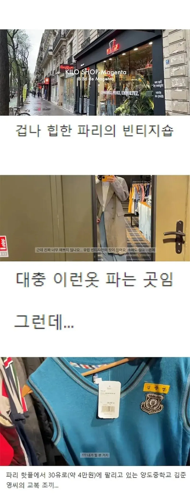

난 경기도 김포의 김준영이다!
준영이 양도중학교 교복을 양도했네
난 파리 15구(보지라르)의 김준영이다!
보지요?
유럽 빈티지는 실제로 동아시아 의상이었고 ㅋㅋ
준영아..
나는 양도중학교의 김준영이두와!
양도한다
유럽 빈티지숍 = 한국 헌옷수거함
유럽 가기 전에 동묘에서 컷해야겠다
인스타에서 외국 애기아빠가 빈티지모자로 1군단 마크 오바로크 된 예비군 깨구리모 쓰고있는것도 봄ㅋㅋㅋㅋ
뭐야 교복 같은 유니폼류는 수출업자도 안 받아준다고 ㄹㅇ 쓰레기라고 들었는데 잘만 나가네
와 근데 좀 색이 비비드하네
철학이 좀 느껴지니?
역시스토리 텔링!!
교복은 빈티지샵에 군복은 군장점에